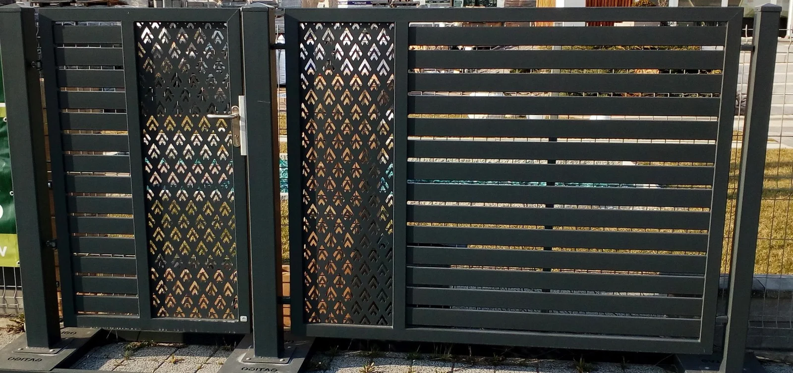
Bramy Gatigo
Wjazd, który współgra z ogrodzeniem. Dobór konstrukcji zacznij od wymiarów i miejsca dostępnego na działce.
Materiały do podjazdów, tarasów, ogrodzeń i ogrodowych detali. Odkryj pełen zakres oferty Markin — dla klientów indywidualnych, inwestorów i architektów.
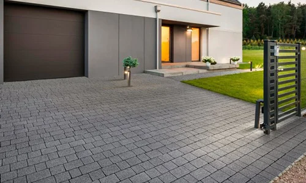
Pierwsze wrażenie zaczyna się przed domem. Dobierz format, kolor i fakturę nawierzchni do architektury budynku, a jej parametry do codziennego ruchu. Zestawienie podjazdu i ścieżek w jednej kompozycji porządkuje całą posesję.
Semmelrock · DrogBruk · Forbet · Libet
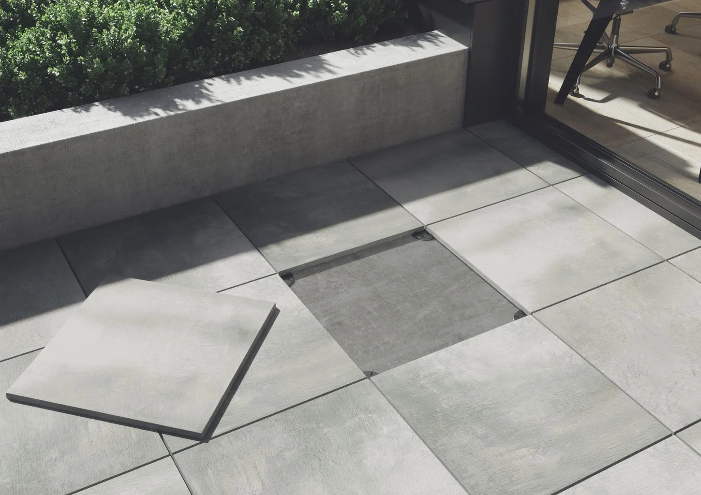
Taras może być naturalnym przedłużeniem salonu. Spokojne powierzchnie, wyrazisty rysunek kamienia lub duże formaty tworzą tło dla odpoczynku. W rozwiązaniu wentylowanym płyty opierają się na wspornikach, pozostawiając pod nimi przestrzeń na przepływ powietrza i odpływ wody.
Bozza · Poz-Bruk
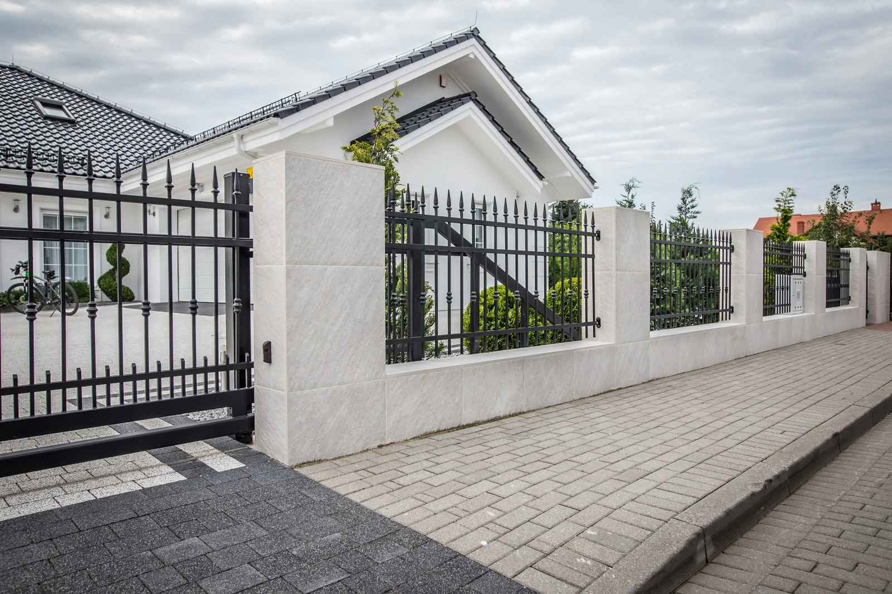
Ogrodzenie nadaje posesji ramę, a brama to detal, z którego korzystasz każdego dnia. Połącz rytm przęseł, słupki i wjazd w spójną całość. Wybór konstrukcji bramy warto rozpocząć od szerokości działki i miejsca dostępnego na otwieranie.
Gatigo · Drewbet · SLABB · COM-BET · Semmelrock
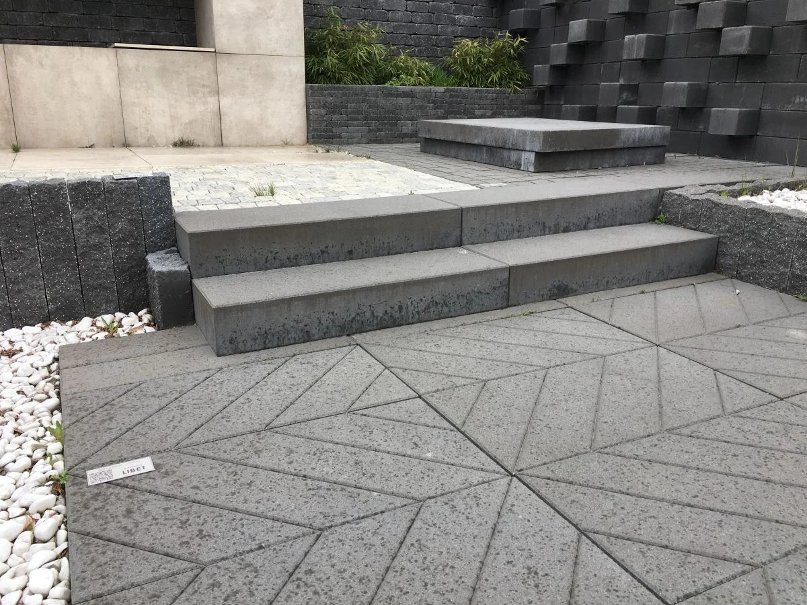
Dobrze zaplanowany ogród ma swój rytm. Murki, stopnie i elementy dekoracyjne pomagają wydzielić strefy, podkreślić poziomy terenu i poprowadzić wzrok. Powtórzenie materiałów z tarasu czy podjazdu pozwala połączyć poszczególne części posesji.
SLABB · Libet · Semmelrock
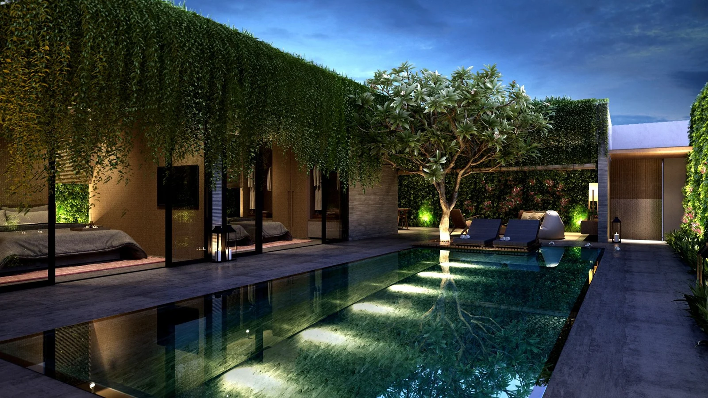
Po zmroku przestrzeń może wyglądać zupełnie inaczej. Światło w nawierzchni, przy schodach i wśród zieleni podkreśla architekturę oraz wyznacza kierunek przejścia. Dobierz oprawy do materiałów i zaplanuj instalację już na etapie projektu.
LedBruk · Libet
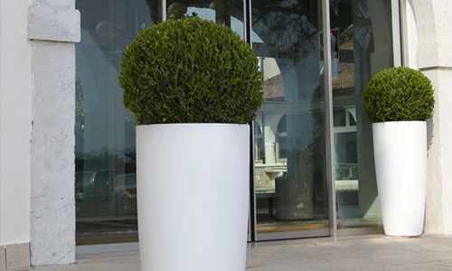
Zieleń zasługuje na odpowiednią oprawę. Donice pomagają zbudować wejście do domu, wydzielić miejsce wypoczynku i wprowadzić rośliny na taras. Zestaw formy o przemyślanych proporcjach z materiałami obecnymi w całej aranżacji.
Future Design

Wjazd, który współgra z ogrodzeniem. Dobór konstrukcji zacznij od wymiarów i miejsca dostępnego na działce.
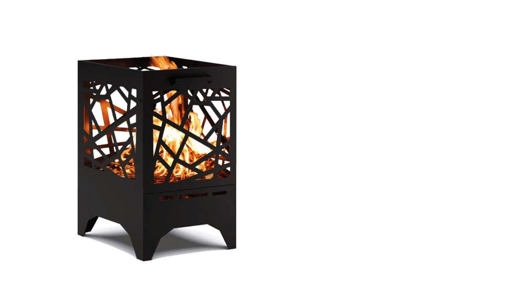
Wyrazisty akcent strefy wypoczynku. Zapytaj o rozwiązania Gatigo do swojej aranżacji.
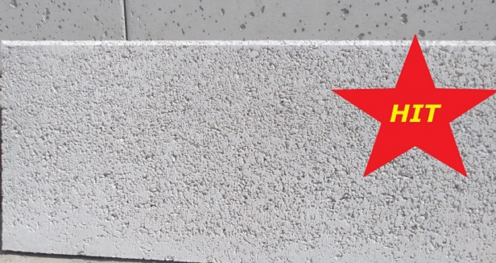
Uporządkuj granice nawierzchni. Dostępność, wykończenie i aktualną cenę potwierdzimy przy wycenie.
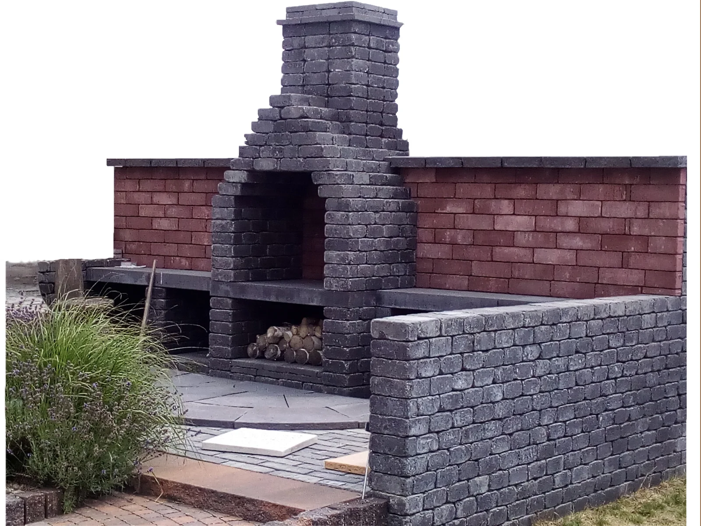
Materiały do ogrodowych kompozycji i miejsca wspólnego spędzania czasu.
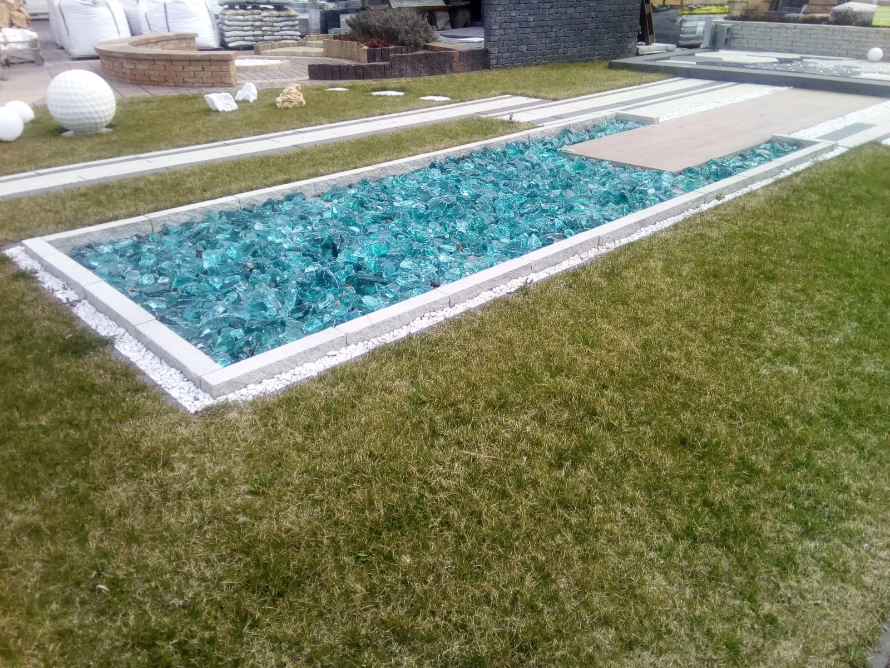
Wprowadź fakturę, akcent koloru i indywidualny charakter ogrodu.